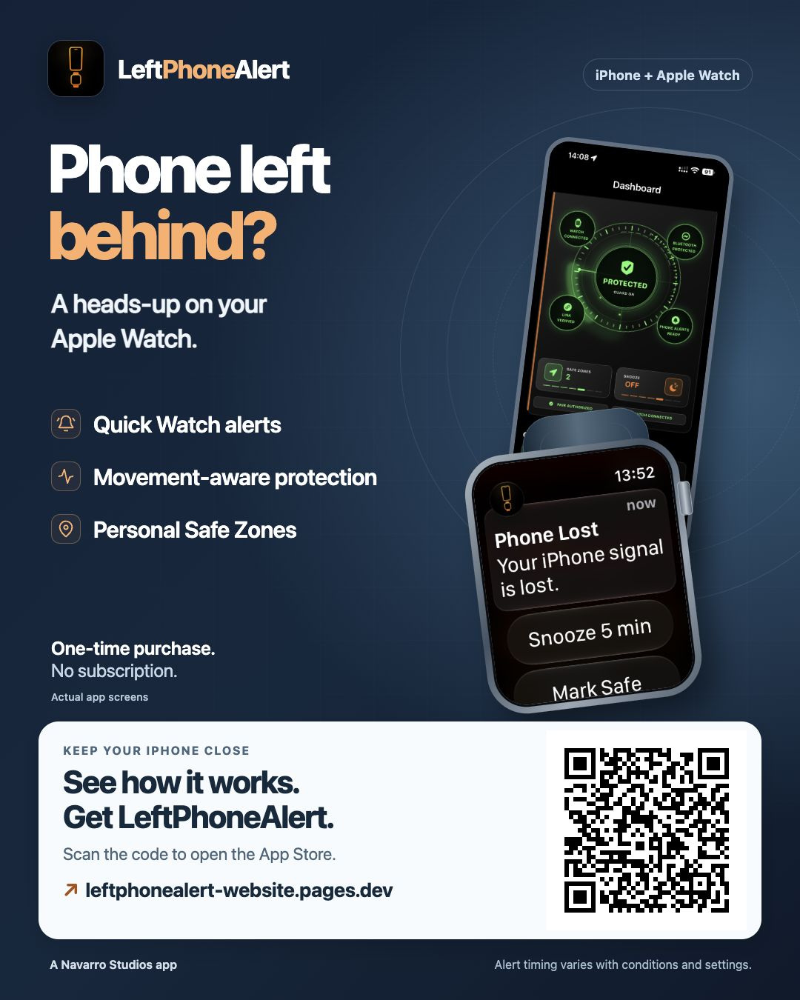

A good idea. Easy to pass on.
Share it
in seconds.
Quick Watch alerts and smart features to help keep your iPhone close. For iPhone + Apple Watch. One-time purchase. No subscription.
Keep it one tap away
Add this page to your Home Screen.
On your iPhone, open this page in Safari. Tap Share → Add to Home Screen and name it Share LPA.
Or open the card, save it to Photos and mark it as a Favourite. You can then show the QR code or send the image through WhatsApp, Messages or AirDrop.
The website: leftphonealert-website.pages.dev
App Store: apps.apple.com/app/id6783860401
Get LeftPhoneAlert on the App Store ↗
Download JPG · Download PNG